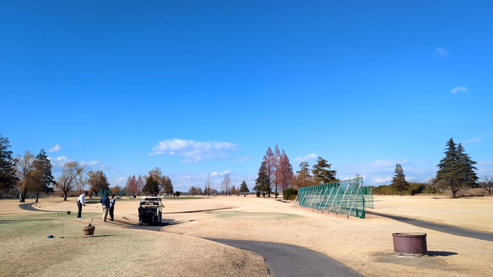

ノーザンカントリークラブ錦ヶ原ゴルフ場でラウンド。スコアは46、52の98。100切りをついに達成した！ゴルフ始めて3ヶ月と26日。良いゴルフ納めとなった。
今日もドライバーとアイアンは割と調子が良く、アプローチがダメだった。パターも3パットがちょこちょこ出る。アプローチについては完全にゼロから鍛え直したい。2時間打ち放題でアプローチだけやるような、気合の入った練習が必要。
来年も仕事とゴルフの両立をしていきたい。今のクラブセットはパターも入れて8本しかないけど、これでも80切れると思ってる。コストパースコアを最小化したい。